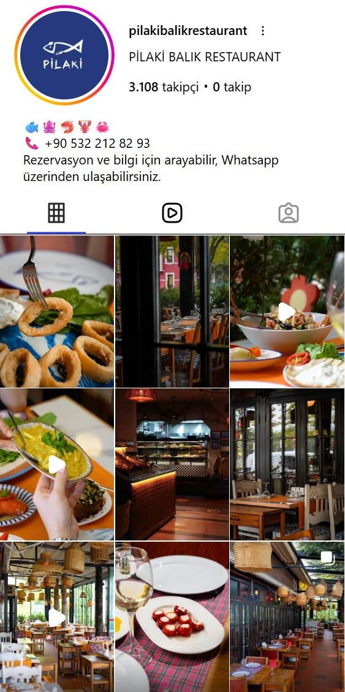
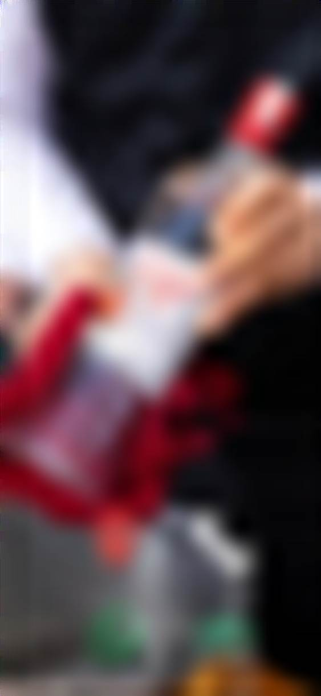

Vitrin
Profili gören birinin rezervasyona en fazla iki dokunuşta ulaşması.
- Profil ve bio yeniden kurgusu
- Link sayfasının yenilenmesi
- Google kaydının düzeltilmesi
- gizli
Pilaki'nin Instagram hesabını, bio linkini ve Google kaydını Ankara'daki yedi balık restoranıyla karşılaştırdım. Gördüklerimin özeti ve önümüzdeki 90 günün ana hatları aşağıda.
Bölgedeki balık restoranlarının çoğundan fazla yorum.
Yakın rakiplerin çoğunda 550 ile 760 arasında.
Haziran 2024'ten 15 Ekim 2026'ya kadar.
Profilde hiçbiri yok. Menü hiçbir kanalda bulunmuyor.
Solda Pilaki'nin bugünkü profili. Yanında iki rakibin profil yapısı; fotoğraflar çıkarıldı, yalnızca iskelet bırakıldı. Halkalar öne çıkanları, mavi satır bio linkini gösteriyor.

Ekim'deki çekimler mekânın en güçlü yanlarını yakalıyor: camekân, hasır avizeler, turuncu masalar, sıcak ışık. Ama iyi bir fotoğraf tek başına rezervasyon getirmez.
Bu hafta neyi, hangi amaçla çekiyoruz?
Brife göre fotoğraf ve video üretimi.
Kurgu, metin, zamanlama, profil ve Google.
Ne işe yaradı? Sonraki brif buna göre yazılır.
Fotoğrafçı en iyi bildiği işe, çekime odaklanır. Geri kalanı tek elden yürür ve her çekim gününün bir amacı olur.
Profili gören birinin rezervasyona en fazla iki dokunuşta ulaşması.
Haftada en az üç paylaşımla hesabın her gün yaşadığını göstermek.
Misafirlerin Pilaki'yi kendiliğinden paylaşması ve Ankara'daki balık listelerinde yer almak.
Solda bio'daki linke tıklayan birinin bugün gördüğü sayfa. Bu sayfada yasal açıdan sorun çıkarabilecek bir ayrıntı var. Sağda yeni profilin taslağı.

Her çekim günü için bir brif hazırlanır. Fotoğrafçı sete neyi, neden çekeceğini ve görüntünün nerede kullanılacağını bilerek gelir.
İlk hafta mevcut durum ölçülür. Her ay sonunda tek sayfalık bir rapor: ne yapıldı, ne işe yaradı, sonraki ay neye odaklanılacak.
Görüşmede birlikte bakacaklarımız:
Uygun olduğunuz günü bu mesaja yanıt olarak yazmanız yeterli.